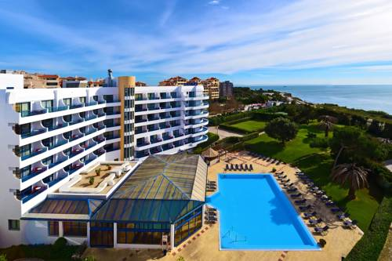

Este hotel de 4 estrelas na Costa do Estoril disponibiliza uma piscina interior com banheira de hidromassagem e uma sauna. A piscina exterior e os jardins com palmeiras oferecem vistas do Oceano Atlântico.
Todos os quartos do Pestana Cascais têm uma varanda espaçosa e uma área de estar exterior com vistas do mar ou do jardim. Dispõem de uma kitchenette totalmente equipada, incluindo um frigorífico.
O Restaurante Oceano serve cozinha portuguesa e mediterrânica, e apresenta várias noites temáticas. O lounge bar interior, Atlântico, e o bar de piscina propõem snacks ligeiros e bebidas.
O Hotel Pestana Cascais providencia um serviço de transporte gratuito para o centro de Cascais e a Praia do Guincho. O hotel está localizado a 20 km do Aeroporto de Lisboa e disponibiliza transporte de/para o aeroporto e um serviço de aluguer de carros, mediante um custo adicional.